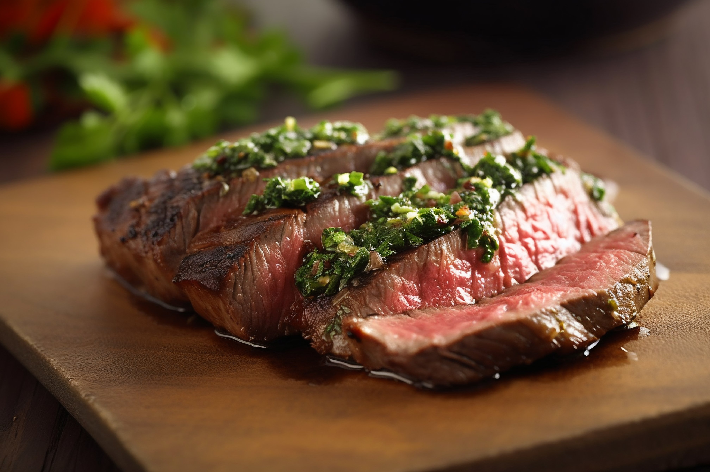
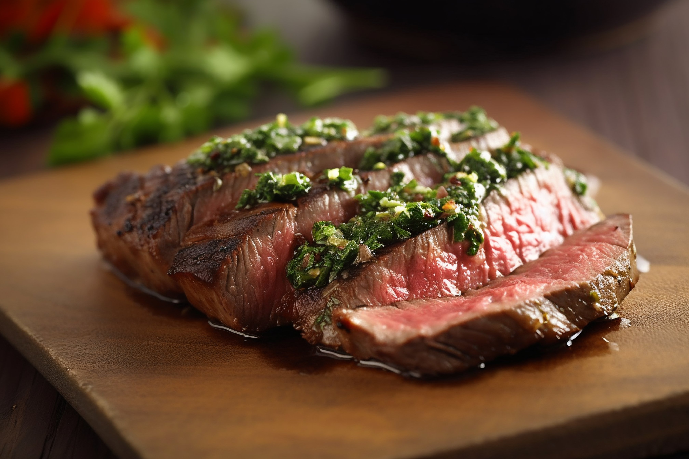

Cooking, cookery, or culinary arts is the art, science and craft of using heat to make food more palatable, digestible, nutritious, or safe. Cooking techniques and ingredients vary widely, from grilling food over an open fire to using electric stoves, to baking in various types of ovens, reflecting local conditions